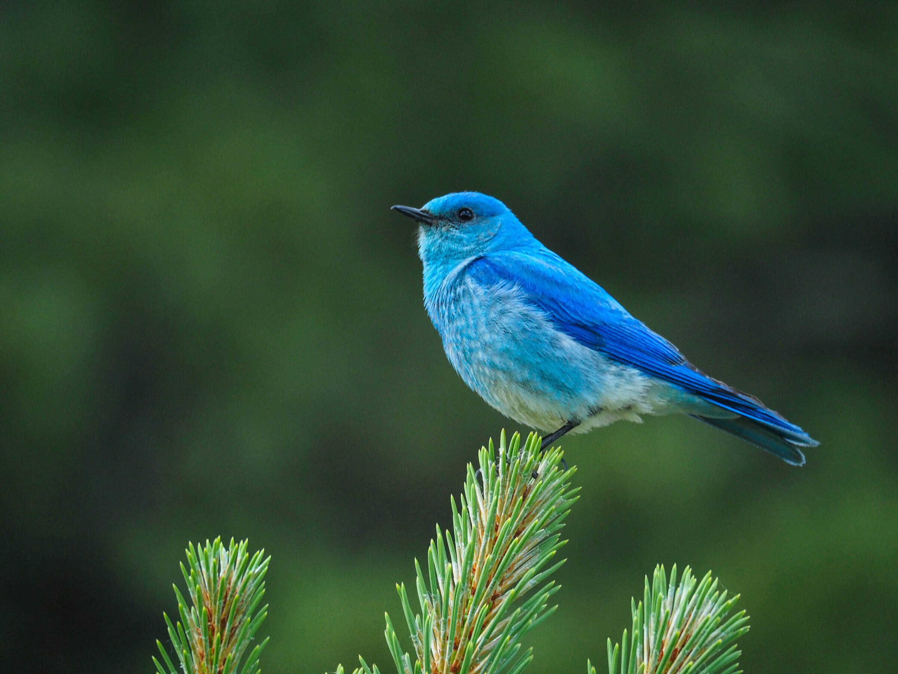
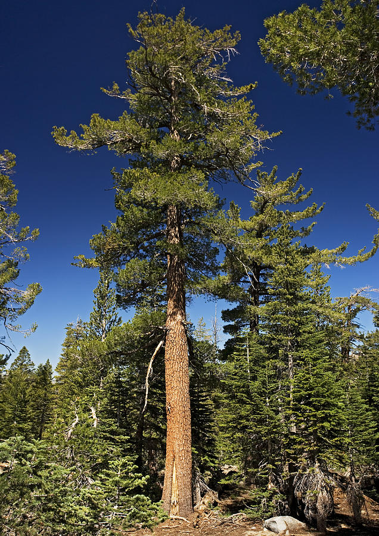

Idaho
Bordered by the Canadian province of British Columbia to the north and the U.S. states of Montana and Wyoming to the
east, Utah and Nevada to the south, and Oregon and Washington to the west, Idaho is twice as large as the six New
England states combined. With an abundance of scenic mountains, lakes, rivers and outdoor attractions, the state draws
more than 20 million tourists eachyear. Idaho produces more potatoes and trout than any other state in the nation, and
is known as the “Gem State” for the 72 types of precious and semi-precious stones it produces—some of which are
exclusive to the state. Its state capital, Boise, is also its largest city with more than 200,000 residents.
| Date of Statehood |
Capital |
Population |
Size |
| July 3, 1890 |
Boise |
1.84 million |
83,569 square miles |
Motto
Esto perpetua (“Let it be perpetual”)
Bird
Mountain Bluebird

Tree
Western White Pine

Interesting facts
-
The state seal of Idaho is the only state seal in the United States designed by a woman. In 1891, Emma Edwards Green,
who had previously attended art school in New York, entered and won a competition sponsored by the First Legislature for
the State of Idaho with her depiction of a miner, a woman signifying justice and various state natural resources.
-
Carved by the Snake River, Hell’s Canyon is North America’s deepest river gorge—even deeper than the Grand Canyon—with a
width of ten miles and a depth of 7,913 feet below He Devil Peak in the Seven Devils Mountains.
-
Author Ernest Hemingway, who won a Pulitzer Prize for The Old Man in the Sea in 1953 and who was awarded the Nobel Prize
in Literature the following year, died of a self-inflicted shotgun wound in his home in Ketchum on July 2, 1961. A
memorial, exhibit and festival held near Sun Valley pay tribute to the renowned author’s accomplishments and time spent
in Idaho
-
Rigby, Idaho, is known as the birthplace of television. Inventor Philo Farnsworth, who grew up in the tiny town,
reportedly sketched out the principle behind the technology for a high school science paper.